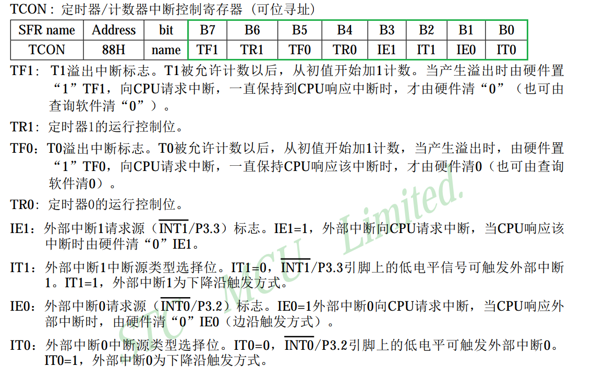
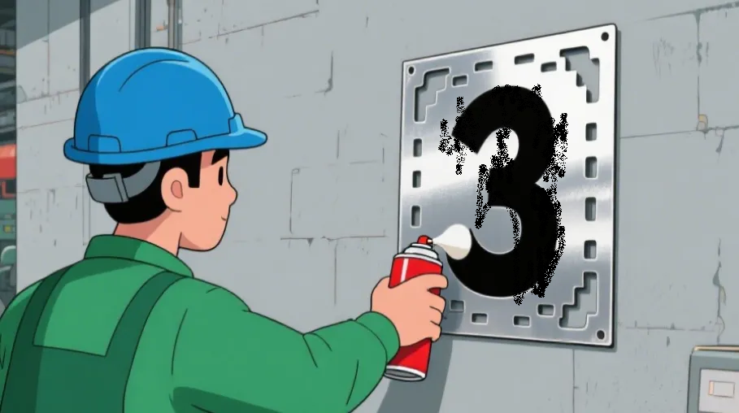
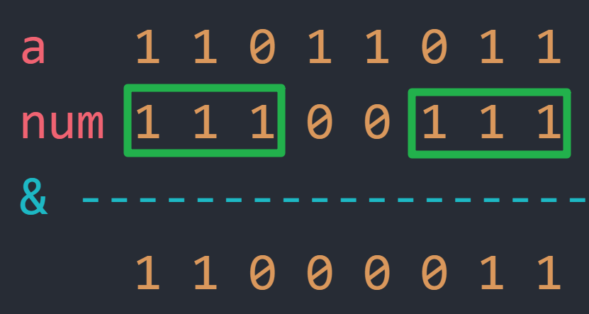

<!DOCTYPE lake>
<h1 data-lake-id="Cxxrx" id="Cxxrx"><span data-lake-id="u4d002f69" id="u4d002f69">0&gt; 功能需求</span></h1><p data-lake-id="ud4e90394" id="ud4e90394"><span data-lake-id="u7a96691d" id="u7a96691d">嵌入式软件开发中，单片机的配置寄存器，每位有特定的功能，所以在设定特定位时，不能影响其他位。</span></p><hr/><p data-lake-id="u4db9bfaf" id="u4db9bfaf"><span data-lake-id="ud6db84ca" id="ud6db84ca">51单片机的TCON寄存器功能表：</span></p><p data-lake-id="u0e22cef5" id="u0e22cef5"></p><hr/><h1 data-lake-id="rJWUY" id="rJWUY"><span data-lake-id="ua5bed791" id="ua5bed791">1&gt; 直接掩码法</span></h1><h2 data-lake-id="YcyHq" id="YcyHq"><span data-lake-id="u4fde09af" id="u4fde09af">1.1&gt; 指定位-清0</span></h2><h3 data-lake-id="l9Tji" id="l9Tji"><span data-lake-id="u260c2613" id="u260c2613">1.1.1&gt; 构造辅助数</span></h3><span class="yuque-card-unsupported">[codeblock]</span><hr/><span class="yuque-card-unsupported">[codeblock]</span><p data-lake-id="u859eca2c" id="u859eca2c"><br/></p><span class="yuque-card-unsupported">[codeblock]</span><p data-lake-id="u8422cecc" id="u8422cecc"><br/></p><span class="yuque-card-unsupported">[codeblock]</span><p data-lake-id="uf3e836d9" id="uf3e836d9"><span data-lake-id="u90d19d2a" id="u90d19d2a">😀</span><span data-lake-id="ud576f670" id="ud576f670">通过构造辅助数num = 0b11100111，利用位与&amp;的特性，我们完美的解决问题！</span></p><hr/><h3 data-lake-id="rbtnD" id="rbtnD"><span data-lake-id="u349e843b" id="u349e843b">1.1.2&gt; 掩码</span></h3><p data-lake-id="uae1fcd8c" id="uae1fcd8c"></p><p data-lake-id="u75fa12fb" id="u75fa12fb"><span data-lake-id="u29293d13" id="u29293d13">🎨</span><span data-lake-id="uf9455a09" id="uf9455a09">要在墙上喷个数字 “3”：</span></p><ul list="ubca21f2f"><li data-lake-id="u58916724" fid="u08943740" id="u58916724"><span data-lake-id="u2615d8b8" id="u2615d8b8">将数字喷漆模板固定在墙上，喷漆只能通过</span><span data-lake-id="ubf1cab04" id="ubf1cab04" style="color: #2F4BDA">镂空部分</span><span data-lake-id="u8c411104" id="u8c411104">落到墙上。</span></li><li data-lake-id="u89b35b0b" fid="u08943740" id="u89b35b0b"><span data-lake-id="ubdc70020" id="ubdc70020" style="color: #2F4BDA">遮挡部分</span><span data-lake-id="u436c1848" id="u436c1848">阻止喷漆通过，保留墙面的原始颜色。</span></li></ul><hr/><p data-lake-id="u6726c73f" id="u6726c73f"><span data-lake-id="uca4d67f6" id="uca4d67f6">有意思的来了：</span></p><p data-lake-id="u089515ee" id="u089515ee"></p><p data-lake-id="u7982bf7b" id="u7982bf7b"><span data-lake-id="u9781890d" id="u9781890d">你瞅瞅，num这个数字中：</span></p><p data-lake-id="u9d7221d8" id="u9d7221d8" style="text-indent: 2em"><span data-lake-id="u7efc1a6f" id="u7efc1a6f">值为“</span><strong><span data-lake-id="u62ad1022" id="u62ad1022" style="color: #DF2A3F">1</span></strong><span data-lake-id="uebc802d5" id="uebc802d5">”的位置，保留了原始值（相等于遮挡部分不喷漆）；</span></p><p data-lake-id="u968a073b" id="u968a073b" style="text-indent: 2em"><span data-lake-id="uf297e50f" id="uf297e50f">值为“</span><strong><span data-lake-id="ueb831847" id="ueb831847" style="color: #DF2A3F">0</span></strong><span data-lake-id="u7508f947" id="u7508f947">”的位置，将原始值改变（相等于镂空部分喷漆）；</span></p><p data-lake-id="u6378ffbd" id="u6378ffbd"><span data-lake-id="ubb282340" id="ubb282340">num这个数字有个计算机专业术语，叫“</span><span data-lake-id="u0c82496b" id="u0c82496b" style="color: #DF2A3F">掩码</span><span data-lake-id="uf56533e3" id="uf56533e3">”，英文名</span><span data-lake-id="ucccdebaf" id="ucccdebaf" style="color: #DF2A3F">Mask</span><span data-lake-id="ubb4ef94d" id="ubb4ef94d">，直译就是面具，</span></p><p data-lake-id="u302fd45f" id="u302fd45f"><span data-lake-id="u698d43b4" id="u698d43b4">“掩码（Mask）” 像一个“面具”一样，</span></p><p data-lake-id="u59fed73d" id="u59fed73d"><span data-lake-id="ue166df86" id="ue166df86">特别适合用来“遮盖”“提取”“修改”数据的指定部分；</span></p><p data-lake-id="uf4836ed6" id="uf4836ed6"><br/></p><p data-lake-id="ufea5ced3" id="ufea5ced3"></p><hr/><h2 data-lake-id="SohUP" id="SohUP"><span data-lake-id="u1cb8ea3d" id="u1cb8ea3d">1.2&gt; 指定位-置1</span></h2><span class="yuque-card-unsupported">[codeblock]</span><p data-lake-id="ue09e39c9" id="ue09e39c9"><span data-lake-id="u2efed494" id="u2efed494">​</span><br/></p><span class="yuque-card-unsupported">[codeblock]</span><span class="yuque-card-unsupported">[codeblock]</span><span class="yuque-card-unsupported">[codeblock]</span><p data-lake-id="u5b0c046e" id="u5b0c046e"><span data-lake-id="ubfc7c622" id="ubfc7c622">通过构造</span><code data-lake-id="u3c546e24" id="u3c546e24"><span data-lake-id="udf13693a" id="udf13693a">mask = 0b00011000;</span></code><span data-lake-id="u9fe1fc13" id="u9fe1fc13">这个“面具</span><span data-lake-id="u0b62ad11" id="u0b62ad11">👾</span><span data-lake-id="u0250b2b9" id="u0250b2b9">”，</span></p><p data-lake-id="ufc28472a" id="ufc28472a"><span data-lake-id="u3b5e616a" id="u3b5e616a">配合位或</span><code data-lake-id="u7653e9df" id="u7653e9df"><span data-lake-id="u54d6a7b2" id="u54d6a7b2">|</span></code><span data-lake-id="u18008a5d" id="u18008a5d">操作，把位0的部分挡住不变，位1的部分置1；</span></p><hr/><h2 data-lake-id="fXcUn" id="fXcUn"><span data-lake-id="u6c6d0418" id="u6c6d0418">1.3&gt; 指定位-取反</span></h2><span class="yuque-card-unsupported">[codeblock]</span><p data-lake-id="u5d4432cf" id="u5d4432cf"><br/></p><span class="yuque-card-unsupported">[codeblock]</span><p data-lake-id="u64f8b6da" id="u64f8b6da"><br/></p><span class="yuque-card-unsupported">[codeblock]</span><p data-lake-id="u72e387aa" id="u72e387aa"><br/></p><span class="yuque-card-unsupported">[codeblock]</span><p data-lake-id="u0084f3fd" id="u0084f3fd"><span data-lake-id="u5d303ec4" id="u5d303ec4">通过构造</span><code data-lake-id="u9494a350" id="u9494a350"><span data-lake-id="u847f0842" id="u847f0842">mask = 0b00111100;</span></code><span data-lake-id="u7d431a52" id="u7d431a52">这个“面具</span><span data-lake-id="uf5a34390" id="uf5a34390">👾</span><span data-lake-id="u4f87d380" id="u4f87d380">”，</span></p><p data-lake-id="u0a465585" id="u0a465585"><span data-lake-id="ue90beb2a" id="ue90beb2a">配合异或</span><code data-lake-id="u293ebacb" id="u293ebacb"><span data-lake-id="u8b1d5cfa" id="u8b1d5cfa">^</span></code><span data-lake-id="u1ab7f5f8" id="u1ab7f5f8">操作，把位0的部分挡住不变，位1的部分取反；</span></p><p data-lake-id="ub87e0fd1" id="ub87e0fd1"><br/></p><hr/><h2 data-lake-id="n8SPI" id="n8SPI"><span data-lake-id="ua9117d7c" id="ua9117d7c">1.4&gt; 位操作总结</span></h2><table class="lake-table" data-lake-id="D7LSH" id="D7LSH" margin="true" style="width: 612px" width-mode="contain"><colgroup><col width="152"/><col width="90"/><col width="370"/></colgroup><tbody><tr data-lake-id="u32560f40" id="u32560f40"><td data-lake-id="u9df5211e" id="u9df5211e" style="background-color: #C1E77E"><p data-lake-id="uaee7190f" id="uaee7190f" style="text-align: center"><span data-lake-id="ue3d96dd6" id="ue3d96dd6">功能</span></p></td><td data-lake-id="u2fdeb329" id="u2fdeb329" style="background-color: #C1E77E"><p data-lake-id="u556970af" id="u556970af" style="text-align: center"><span data-lake-id="udf7fb67a" id="udf7fb67a">位操作</span></p></td><td data-lake-id="u7907d92c" id="u7907d92c" style="background-color: #C1E77E"><p data-lake-id="uce896178" id="uce896178" style="text-align: center"><span data-lake-id="u06ab40f3" id="u06ab40f3">说明</span></p></td></tr><tr data-lake-id="ufb82c73b" id="ufb82c73b"><td data-lake-id="u448e1ce0" id="u448e1ce0"><p data-lake-id="u6f44a177" id="u6f44a177"><span data-lake-id="u22e161f6" id="u22e161f6">指定位-清0</span></p></td><td data-lake-id="u2e05894d" id="u2e05894d"><p data-lake-id="u6eb036dd" id="u6eb036dd"><span data-lake-id="ufb6a9f95" id="ufb6a9f95">&amp;0</span></p></td><td data-lake-id="ucc150762" id="ucc150762"><p data-lake-id="uc81b0d50" id="uc81b0d50"><span data-lake-id="u22ee5b0e" id="u22ee5b0e">构造掩码，位与0是</span><strong><span data-lake-id="u11d7006f" id="u11d7006f" style="color: #DF2A3F">0</span></strong><span data-lake-id="u12ba265b" id="u12ba265b">，位与1不变；</span></p></td></tr><tr data-lake-id="u91528610" id="u91528610" style="height: 35px"><td data-lake-id="ue5514381" id="ue5514381"><p data-lake-id="u3667009c" id="u3667009c"><span data-lake-id="u0f064d40" id="u0f064d40">指定位-置1</span></p></td><td data-lake-id="ud9223615" id="ud9223615"><p data-lake-id="u6c940e77" id="u6c940e77"><span data-lake-id="u48b1c5f4" id="u48b1c5f4">|1</span></p></td><td data-lake-id="u2d32d4dd" id="u2d32d4dd"><p data-lake-id="u91ee2905" id="u91ee2905"><span data-lake-id="u19490ddf" id="u19490ddf">构造掩码，位或0不变，位或1是</span><strong><span data-lake-id="uacb8000b" id="uacb8000b" style="color: #DF2A3F">1</span></strong><span data-lake-id="u33628646" id="u33628646">；</span></p></td></tr><tr data-lake-id="ue90ac227" id="ue90ac227"><td data-lake-id="ud013abcb" id="ud013abcb"><p data-lake-id="u7c7da0fe" id="u7c7da0fe"><span data-lake-id="u77b97e38" id="u77b97e38">指定位-取反</span></p></td><td data-lake-id="u56b95bed" id="u56b95bed"><p data-lake-id="u6d51da9b" id="u6d51da9b"><span data-lake-id="ucbb71a63" id="ucbb71a63">^1</span></p></td><td data-lake-id="u8d784875" id="u8d784875"><p data-lake-id="uc92b0f6d" id="uc92b0f6d"><span data-lake-id="udcbe19d7" id="udcbe19d7">构造掩码，位异或0不变，位异或1</span><strong><span data-lake-id="ud5b9f2bb" id="ud5b9f2bb" style="color: #DF2A3F">取反</span></strong><span data-lake-id="u2a5b1a69" id="u2a5b1a69">；</span></p></td></tr></tbody></table><p data-lake-id="u93e95289" id="u93e95289"><span data-lake-id="u73e3541a" id="u73e3541a">🐳</span><span data-lake-id="u11793ea4" id="u11793ea4">思考：功能是实现了，但总要取拼凑一个辅助数（掩码），不灵活，非常难受！</span></p><hr/><h1 data-lake-id="CjVHq" id="CjVHq"><span data-lake-id="u8b449726" id="u8b449726">2&gt; 构造掩码法</span></h1><h2 data-lake-id="XKMPj" id="XKMPj"><span data-lake-id="uff75342f" id="uff75342f">2.1&gt; 指定位“置1”</span></h2><h3 data-lake-id="r9PQL" id="r9PQL"><span data-lake-id="u2587faef" id="u2587faef">2.1.1&gt; 单bit置1</span></h3><span class="yuque-card-unsupported">[codeblock]</span><span class="yuque-card-unsupported">[codeblock]</span><p data-lake-id="uefe3c4e6" id="uefe3c4e6"><span data-lake-id="ufe9552e4" id="ufe9552e4">​</span><br/></p><span class="yuque-card-unsupported">[codeblock]</span><p data-lake-id="ude62d9f5" id="ude62d9f5"><code data-lake-id="u5329c2b7" id="u5329c2b7"><span data-lake-id="u96abd539" id="u96abd539">mask = 1 &lt;&lt; 3</span></code><span data-lake-id="udba906ab" id="udba906ab">, 这个移位太美了</span><span data-lake-id="u28847bac" id="u28847bac">😆</span><span data-lake-id="ubb7ba8e0" id="ubb7ba8e0">，移动3位，就是改变bit3，太直观，你想换其他位，直接改数就行；</span></p><hr/><h3 data-lake-id="ObDPL" id="ObDPL"><span data-lake-id="u4bc84a41" id="u4bc84a41">2.1.2&gt; 连续多bit置1</span></h3><span class="yuque-card-unsupported">[codeblock]</span><span class="yuque-card-unsupported">[codeblock]</span><span class="yuque-card-unsupported">[codeblock]</span><hr/><h3 data-lake-id="VByyO" id="VByyO"><span data-lake-id="u3c43a182" id="u3c43a182">2.1.3&gt; 离散多bit置1</span></h3><span class="yuque-card-unsupported">[codeblock]</span><span class="yuque-card-unsupported">[codeblock]</span><span class="yuque-card-unsupported">[codeblock]</span><p data-lake-id="u3639eb6c" id="u3639eb6c"><span data-lake-id="u5cdb164f" id="u5cdb164f">🎨</span><span data-lake-id="u82536571" id="u82536571">动态构造掩码的优势：</span></p><p data-lake-id="u5f0df72e" id="u5f0df72e"><span data-lake-id="u516d0bc7" id="u516d0bc7" style="color: #601BDE">可读性</span><span data-lake-id="uf1c2951a" id="uf1c2951a">：(1 &lt;&lt; 3) | (1 &lt;&lt; 5) 直接体现操作的是 bit3 和 bit5，无需手动计算掩码。</span></p><p data-lake-id="uf0ee1b20" id="uf0ee1b20"><span data-lake-id="ua5e0c12c" id="ua5e0c12c" style="color: #601BDE">灵活性</span><span data-lake-id="u91b7b116" id="u91b7b116">：若需增加/修改操作的位（如新增 bit1），只需扩展表达式：</span></p><span class="yuque-card-unsupported">[codeblock]</span><hr/><h2 data-lake-id="raXzm" id="raXzm"><span data-lake-id="u570f86fa" id="u570f86fa">2.2&gt; 指定位“清0”</span></h2><h3 data-lake-id="zSmiA" id="zSmiA"><span data-lake-id="u7f0aac2d" id="u7f0aac2d">2.1.1&gt; 单bit清0</span></h3><span class="yuque-card-unsupported">[codeblock]</span><span class="yuque-card-unsupported">[codeblock]</span><span class="yuque-card-unsupported">[codeblock]</span><p data-lake-id="u79cbe37c" id="u79cbe37c"><span data-lake-id="u91286f82" id="u91286f82">🤔</span><span data-lake-id="u8725f4b4" id="u8725f4b4">通过 </span><code data-lake-id="u76d80896" id="u76d80896"><span data-lake-id="u96148b98" id="u96148b98">~(1 &lt;&lt; n)</span></code><span data-lake-id="uf44f20b2" id="uf44f20b2">，使用移位，取反操作，这招嘎嘎好用！</span></p><p data-lake-id="u4f44e7e7" id="u4f44e7e7"><span data-lake-id="u04adfc69" id="u04adfc69">动态生成掩码mask，可读性强，易修改位号， 比直接写 0xf7 舒服多了！</span></p><hr/><h3 data-lake-id="CmHYI" id="CmHYI"><span data-lake-id="uc6e78a44" id="uc6e78a44">2.1.2&gt; 连续多bit清0</span></h3><span class="yuque-card-unsupported">[codeblock]</span><span class="yuque-card-unsupported">[codeblock]</span><span class="yuque-card-unsupported">[codeblock]</span><hr/><h3 data-lake-id="OjbJC" id="OjbJC"><span data-lake-id="ude813045" id="ude813045">2.1.3&gt; 离散多bit清0</span></h3><span class="yuque-card-unsupported">[codeblock]</span><span class="yuque-card-unsupported">[codeblock]</span><span class="yuque-card-unsupported">[codeblock]</span><p data-lake-id="u3fd18791" id="u3fd18791"><span data-lake-id="ua2b99985" id="ua2b99985"> </span><span data-lake-id="u3f94dac7" id="u3f94dac7">🎨</span><span data-lake-id="u7c238276" id="u7c238276">动态构造掩码的优势:</span></p><p data-lake-id="ue11cd2b7" id="ue11cd2b7"><span data-lake-id="u26d52d52" id="u26d52d52" style="color: #2F4BDA">可读性</span><span data-lake-id="uefba598b" id="uefba598b">：(1 &lt;&lt; 3) | (1 &lt;&lt; 5) 明确体现操作的是 bit3 和 bit5。</span></p><p data-lake-id="u19a439ae" id="u19a439ae"><span data-lake-id="u6be1b9dd" id="u6be1b9dd" style="color: #2F4BDA">灵活性</span><span data-lake-id="u125fd1fc" id="u125fd1fc">：若需新增清0位（如 bit1），只需扩展表达式：</span></p><span class="yuque-card-unsupported">[codeblock]</span><hr/><h2 data-lake-id="ZswSJ" id="ZswSJ"><span data-lake-id="uf659df88" id="uf659df88">2.3&gt; 指定位“获取”</span></h2><h3 data-lake-id="T5WYF" id="T5WYF"><span data-lake-id="u45616e46" id="u45616e46">2.3.1&gt; 单bit获取</span></h3><span class="yuque-card-unsupported">[codeblock]</span><span class="yuque-card-unsupported">[codeblock]</span><span class="yuque-card-unsupported">[codeblock]</span><span class="yuque-card-unsupported">[codeblock]</span><p data-lake-id="u92cdf592" id="u92cdf592"><span data-lake-id="ub05a6aff" id="ub05a6aff">😀</span><code data-lake-id="u652ce991" id="u652ce991"><span data-lake-id="ud5bc0a63" id="ud5bc0a63" style="color: #2F4BDA">a &gt;&gt; 4</span></code><span data-lake-id="ua80c6626" id="ua80c6626"> 将 a 右移4位： bit4 就移动到了最低位（bit0）的位置。神来之笔，这招必须学学！</span></p><hr/><h3 data-lake-id="D0DbR" id="D0DbR"><span data-lake-id="ube10e4a0" id="ube10e4a0">2.3.2&gt; 离散多bit获取</span></h3><span class="yuque-card-unsupported">[codeblock]</span><span class="yuque-card-unsupported">[codeblock]</span><p data-lake-id="u12376729" id="u12376729"><br/></p><span class="yuque-card-unsupported">[codeblock]</span><h3 data-lake-id="MKDN5" id="MKDN5"><span data-lake-id="u10fa34c6" id="u10fa34c6">2.3.3&gt; 连续多bit获取</span></h3><span class="yuque-card-unsupported">[codeblock]</span><span class="yuque-card-unsupported">[codeblock]</span><span class="yuque-card-unsupported">[codeblock]</span><span class="yuque-card-unsupported">[codeblock]</span>